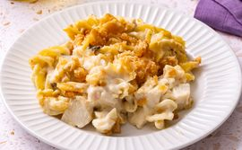

Chicken Noodle Casserole

Opis
Recept koji se lako pravi.
Sastojci:
- Četiri očišćenih pilećih grudi
- 170 grama rezanaca
- 1 kesica supe od pečuraka
- 1 kesica pileće supe
- 1 pavlaka
- So i biber po ukusu
- Pola šolje putera
Uputstvo:
- Zagrejati rernu na 180 stepeni.
- U velikom loncu sipati vodu i zagrejati na srednju temperaturu. Dodati piletinu dok nije ružičasta u centru (kuvati oko 12 minuta) i ne prosipati vodu. Kad je kuvano ukloniti piletinu.
- Kuvati vodu, u kojoj se kuvala piletina, do ključanja i ubaciti rezance.
- Prebaciti rezance u veću činiju i iseckati kuvanu pilteinu na kockice i pomešati sa rezancima.
- U zasebnoj činiju pomešati kesicu pileće supe i supe od pečuraka i dodati so i biber. Dodati taj miks miksu od piletine i rezanaca i mešati dok se ne sjedine.
- Istopiti puter u maloj šerpi na niskoj temperaturi.
- Poprskati mešavinu na vrh kaserole.
- Peći u rerni dok vrh ne postane braon (oko 30 minuta).
Početna strana